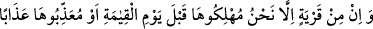

Misafir hikâye eder ki Yemekten sonra,
Enes (r.a.) peşkirinin sararmış,
Kirlenmiş, yemeğe bulaşmış gördü. Hizmetçi kadına:
“Bunu al da tandıra at, bir müddet kalsın” dedi.
Enes’in sırlarına vâkıf olan o hizmetçi de peşkiri
Ateşle dopdolu olan tandıra atıverdi.
Bütün misafirler, şaşırıp kaldılar,
Peşkirden duman çıkacağını; kavrulup yanacağını umuyorlardı.
Derken bir müddet sonra hizmetçi, getirdi.
Peşkiri arınmış temizlenmiş, tertemiz olarak.
Orada bulunanlar: “Ey azîz sahâbî!” dediler.
“Peşkir nasıl oldu da hem yanmadı, hem de temizlendi?”
Enes dedi ki: “Mustafa, elini, ağzını
Bu peşkire silmişti; onun için!”
Ey ateşten, azaptan korkan gönül,
Böyle bir ele, böyle bir ağıza yaklaş!
Bu el, bu ağız, cansız bir şeye böyle bir yücelik verirse
Âşığın rûhuna neler açmaz, neler yapmaz?
Kâbe’nin taşını kerpicini öptü, Kâbe puthaneyken kıble oldu.
Ey can, sen de çalış, çabala da mânâ erlerinin ayağının toprağı ol.
58. Hiçbir ülke yoktur ki biz, kıyâmet gününden önce onu helâk edecek, yahut
ona şiddetli bir şekilde azâb edecek olmayalım. Bu, Kitap’ta (levh-i mahfuz’da)
yazılıdır.
“Hiçbir ülke yoktur ki” Âyette kullanılan edatlardan anlaşıldığına göre bu hüküm
bütün ülkeler için genel bir ifâdedir. Ebüssuûd Efendi ise âyetteki “karye (ülke)”
kelimesiyle kâfir ülkelerin kasdedildiğini söylemiştir. Yâni, ‘kâfir hiçbir ülke yoktur ki’
demektir. “Biz, kıyâmet gününden önce onu helâk edecek,” işlemiş oldukları büyük
günahlar azâbı gerektirdiği için ya tamamen ahâlisini yok etmek veya yerin dibine
geçirmek sûretiyle mutlaka harâb edecek “yahut ona şiddetli bir şekilde azâb edecek
olmayalım.”
Âyette “kıyâmet gününden önce” buyrulmuştur. Çünkü kıyâmet günü helâk ne yalnızca
kâfir ülkelere mahsustur, ne de cezalandırmak içindir. Bu ancak dünyanın ömrünün sona
ermesinden dolayıdır.
“Ülkeye azâb edilmesi” mecâzî bir isnaddır ve o ülkenin halkına şiddetli bir şekilde